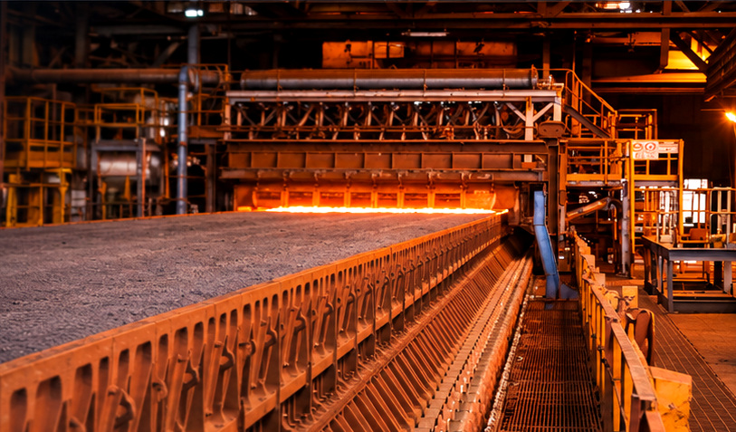
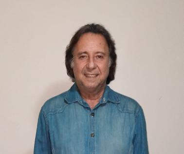
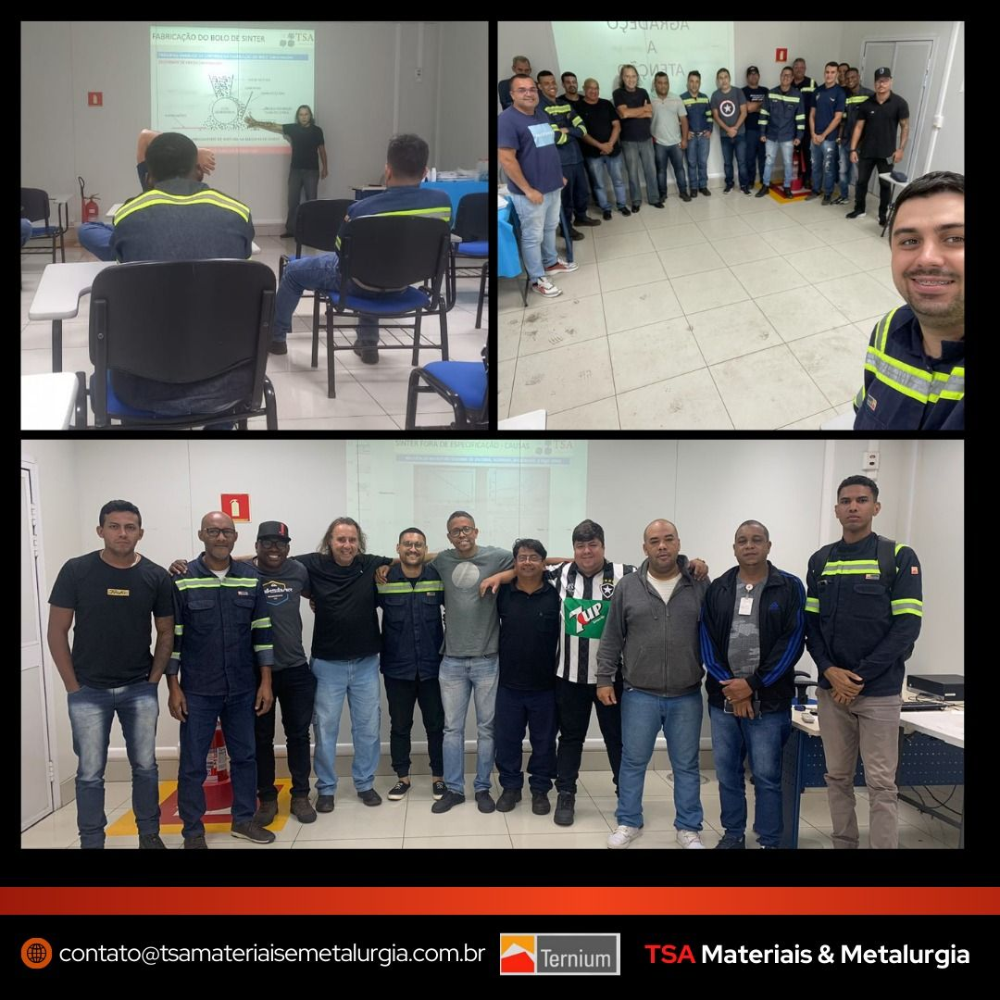
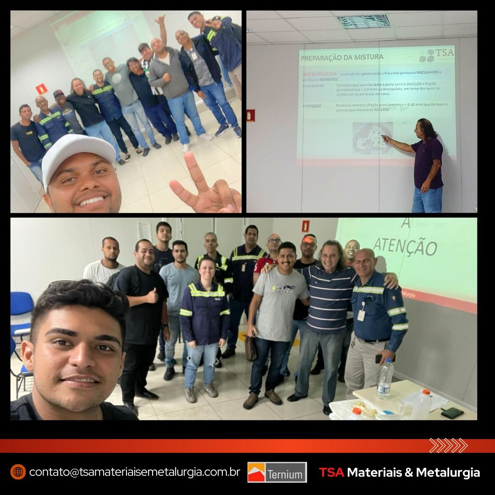
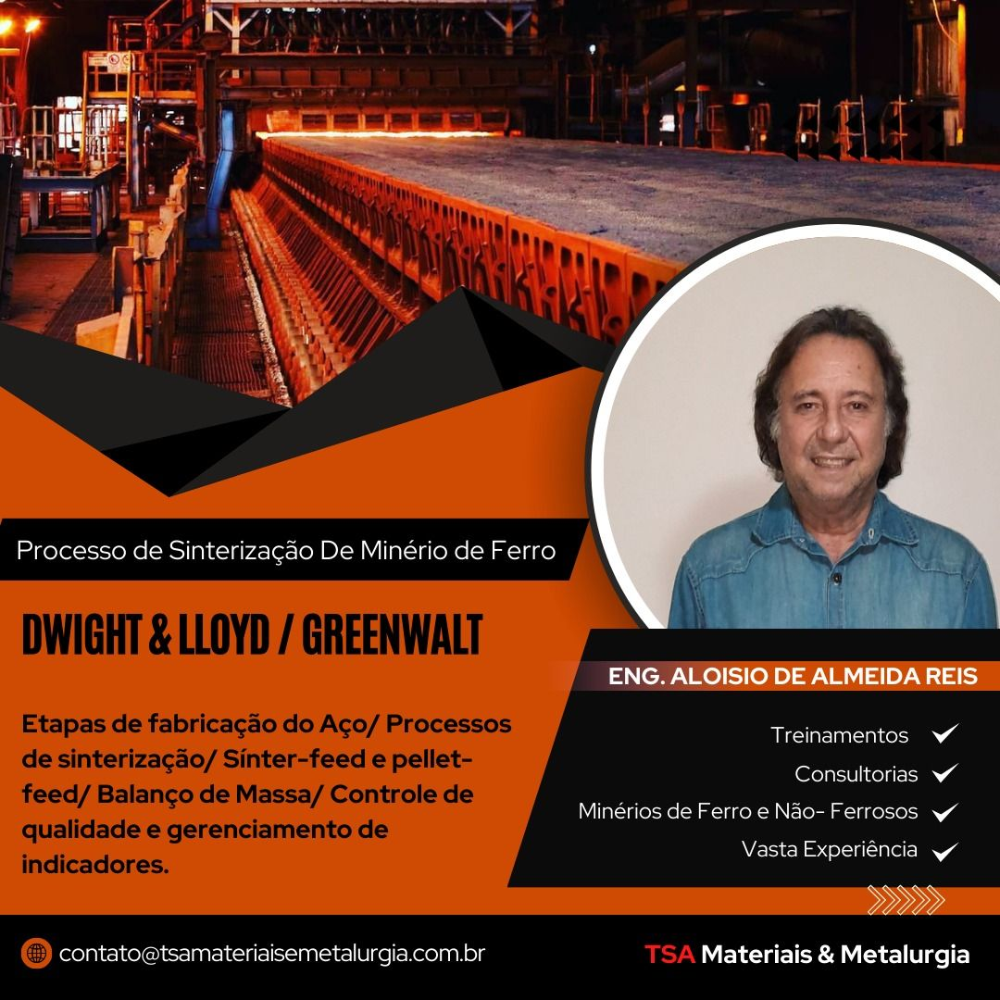

Treinamento de
Sinterização de
Minério de Ferro
Do preparo das matérias-primas ao controle do processo e à qualidade do sínter. Uma formação técnica orientada à operação, aos fundamentos metalúrgicos e à solução de problemas em planta.

Fundamentos que se conectam à operação.
Objetivo da capacitação
Desenvolver conhecimentos aplicados à preparação de sínter-feed e pellet-feed, às operações da planta de sinterização, ao controle de qualidade e aos indicadores de processo.
Público-alvo
Engenheiros, técnicos, operadores, analistas e profissionais que atuam ou desejam atuar na aglomeração de minério de ferro, preparação de matérias-primas e metalurgia de redução.
Entenda as etapas do processo.
Selecione uma etapa ou um fluxo para acompanhar a transformação das matérias-primas em sínter. Os movimentos podem ser pausados a qualquer momento.
Representação didática e conceitual, sem escala ou parâmetros de uma instalação específica. A recuperação do ar aquecido depende da configuração da planta.
Uma jornada técnica completa.
O programa é organizado em quatro módulos. Clique em cada um para conhecer os tópicos abordados.
01Adequação de materiais para a metalurgia de redução+
- Preparação e adequação dos materiais para a rota de redução
- Métodos de empilhamento e sua importância para a regularidade da carga
02Da matéria-prima à fabricação do aço+
- Operações e organização do pátio de matérias-primas
- Estratégias de blendagem e homogeneização
- Tecnologias de aglomeração e seus campos de aplicação
- Preparação da mistura destinada à sinterização
03Processo de sinterização — Dwight & Lloyd+
- Conceitos de sínter e sinterização
- Dosagem, mistura e formação do leito de sinterização
- Formação do bolo de sínter e tratamento mecânico a quente
- Resfriamento, britagem e classificação a frio
- Sistema principal de exaustão e despoeiramento secundário
- Classificação, especificações e propriedades das matérias-primas
- Exercícios de composição de mistura a partir de requisitos químicos do sínter
- Mecanismos físico-químicos de aglomeração
- Perfil térmico, zonas do leito e reações envolvidas
- Parâmetros operacionais que controlam a formação do bolo
- Equipamentos da planta e preparo do combustível
- Ensaios e indicadores de qualidade do sínter
- Diagnóstico de desvios e medidas corretivas
- Impacto da qualidade do sínter na operação do alto-forno
04Balanço de massa+
- Fundamentos e roteiro para elaborar o balanço de massa
- Aplicação dos cálculos às correntes de entrada e saída da sinterização

Experiência industrial e domínio de processo.
Eng. Aloisio de Almeida Reis
Engenheiro Industrial Metalúrgico formado pela Universidade Federal Fluminense (UFF), com extensão universitária em Processos Siderúrgicos e licenciatura em Matemática. Sua trajetória reúne gestão de plantas, implantação de unidades de sinterização, consultoria industrial e formação de equipes operacionais.
Perfil elaborado a partir do currículo profissional fornecido para esta página; vínculos e funções descritos conforme o documento.
Conhecimento compartilhado com equipes industriais.
Registros de capacitações e encontros técnicos, conectando profissionais e especialistas aos desafios da operação.



Leve esta capacitação para sua equipe.
Quer organizar uma turma, solicitar uma proposta ou entender como o programa pode ser adaptado à realidade da sua operação? Converse diretamente com a TSA. O conteúdo e o formato podem ser alinhados conforme a necessidade da empresa.
Capacitação que se transforma em aplicação.
Conheça também nossos treinamentos de preparação de matérias-primas e peneiramento para a operação industrial.